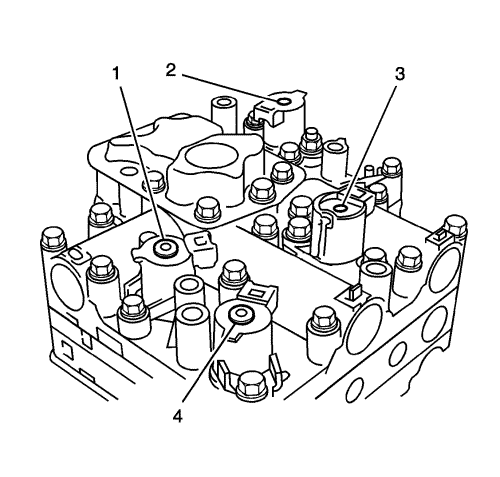
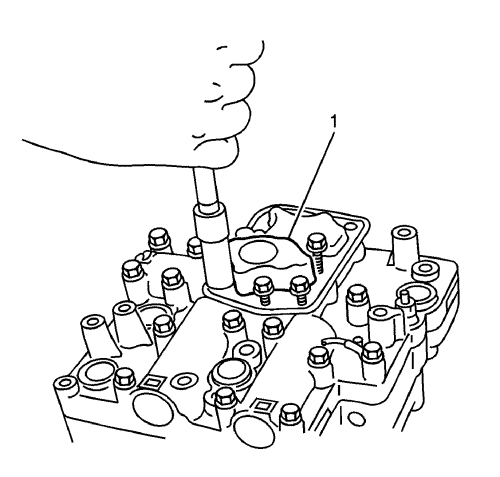
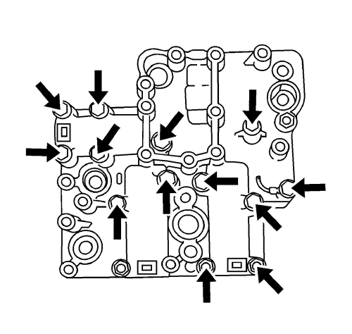
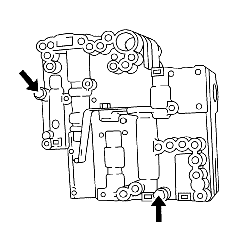
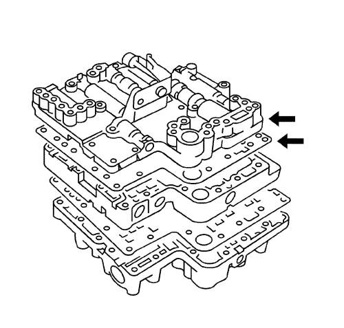
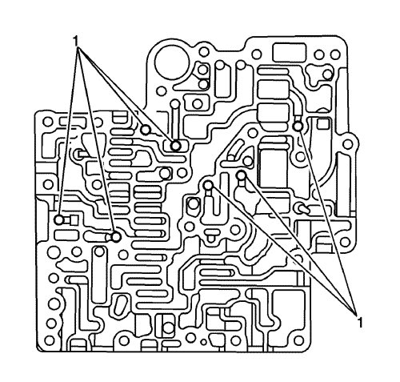
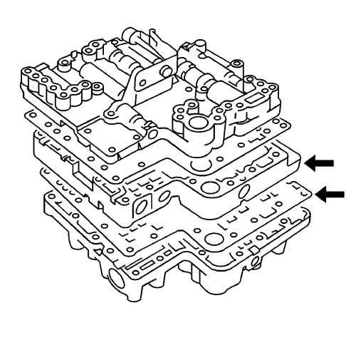
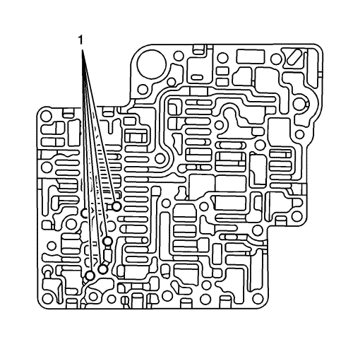
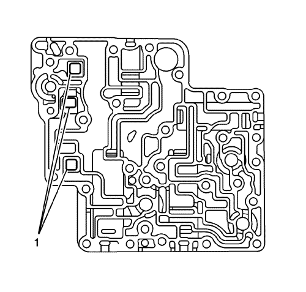

- Desmonte los tornillos de válvula solenoide.
- Desmonte la válvula solenoide del cambio de 1ª-2ª (1), la válvula solenoide del cambio de 2ª-3ª (4), la válvula solenoide de control de presión (3) y la válvula solenoide del embrague del convertidor de par (2) del cuerpo de válvula de control inferior.

- Desmonte la malla filtrante de aceite (1) de la caja de válvulas de control inferior.

- Desmonte los pernos del lado del cuerpo de válvula de control inferior como lo indican las flechas.

- Con el cuerpo superior de válvulas de control mirando hacia arriba, quite el tornillo y la tuerca.

Nota: Hay una bola de acero en el interior del cuerpo de cada válvula. Desmonte cada cuerpo y la placa separadora como un conjunto con el cuerpo de válvula de control inferior mirando hacia abajo.
- Desmonte el cuerpo superior de válvulas de control y la placa separadora como un conjunto.

Nota: Tenga cuidado de que no se caiga ni se pierda la bola de acero.
- Con el cuerpo superior de válvulas de control mirando hacia abajo, desmonte la placa separadora y las bolas de acero (1).

- Con la parte superior del cuerpo central de válvulas de control mirando hacia arriba, desmóntela como un conjunto con la placa separadora B.

Nota: Tenga cuidado de que no se caiga ni se pierda la bola de acero.
- Con la parte superior del cuerpo central de válvulas de control mirando hacia abajo, desmonte la placa separadora B y las bolas de acero (1).

Nota: Tenga cuidado de que no se caiga ni se pierda el filtro de aceite.
- Desmonte el filtro de aceite (1) de la caja de válvulas de control inferior.